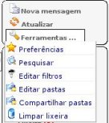
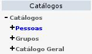

Pagina Inicial
ExpressoMail
Calendario
Catálogo de direcciones
Comunicados Internos
Desconectar
Pagina Inicial |
ExpressoMail |
Calendario |
Catálogo de direcciones |
Comunicados Internos |
Desconectar |
Pagina Inicial
 ExpressoMail
ExpressoMail
 Manual completo do ExpressoMail
Manual completo do ExpressoMail
El ExpressoMail es el módulo de correo del Expresso. A travésde él usted puede acceder, administrar y manipular sus mensajes. Al entrar al módulo, es exhibida su Bandeja de Entrada, con el menú principal y el menú de carpetas a su izquierda. Las principales funcionalidades del módulo serán descriptas a continuación:


| Varias funcionalidades del ExpressoMail pueden ser vistas haciendo clic con el botón derecho sobre el mensaje: |
 |
| Otra posibilidad es hacer clic en el link Buscar y refinar la búsqueda por organización. |
 Haga clic en la imagen para ampliarla. |
| El ExpressoMail posee además otros recursos, como edición de carpetas, creación de filtros, opciones de apariencia, limpieza automática de la Papelera, etc. Estos pueden ser accedidos a través del menú principal, a la izquierda de la pantalla. |  |
 Calendario
Calendario
Catálogo de direcciones
|  | En el menú de haga clic en Personal para visualizar a sus contactos personales. Haga clic en Grupos, para ver a los grupos que usted creó. Haga clic en Catalogo General para expandir el árbol con todas las organizaciones del estado. Haga clic en cualquier uno de los nombres para visualizar a los usuarios de aquella organización. |
 Através del menú "Nuevo", haga clic en "Contacto" para agregar a alguien a su Catalogo Personal, en formulario completo o reducido o haga clic en "Grupo" para crear un grupo personal. Es posible exportar o importar una lista de contactos a través del botón Importar/Exportar. Haciendo clic además en "Ver Tarjetas", la lista de usuarios es substituida por tarjetas con foto y más informaciones de cada usuario.
Através del menú "Nuevo", haga clic en "Contacto" para agregar a alguien a su Catalogo Personal, en formulario completo o reducido o haga clic en "Grupo" para crear un grupo personal. Es posible exportar o importar una lista de contactos a través del botón Importar/Exportar. Haciendo clic además en "Ver Tarjetas", la lista de usuarios es substituida por tarjetas con foto y más informaciones de cada usuario.  Comunicados Internos
Comunicados Internos
 Desconectar
Desconectar